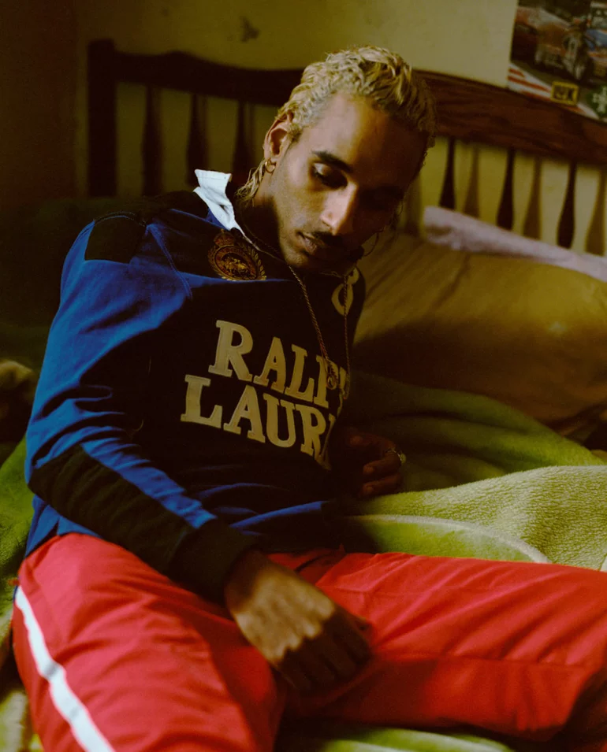

Laylow

Présentation : Laylow, cet artiste à l'univers unique.
Artiste franco-ivoirien-tunisien, il commence sa vie à Toulouse. Il commencera à écrire ses premiers textes à 12 ans, inspiré du rap américain de la West Coast. C'est en 2012 qu'il forme un duo avec l'artiste Sir'Klo. Ils sortiront 2 projets ensemble. Puis en 2015, il sort un projet 8 titres avec l'artiste Wit. Artiste et ami à lui que l'on retrouvera dans plusieurs de ses futurs projets.